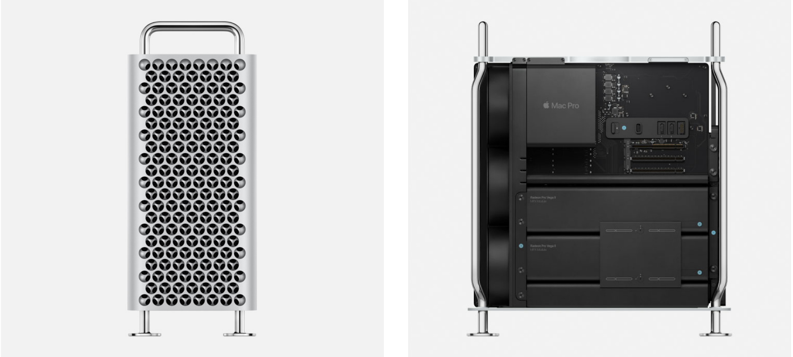
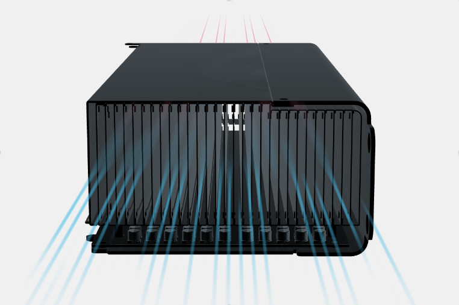
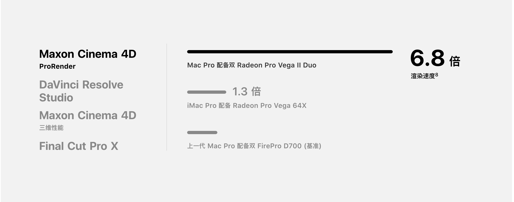
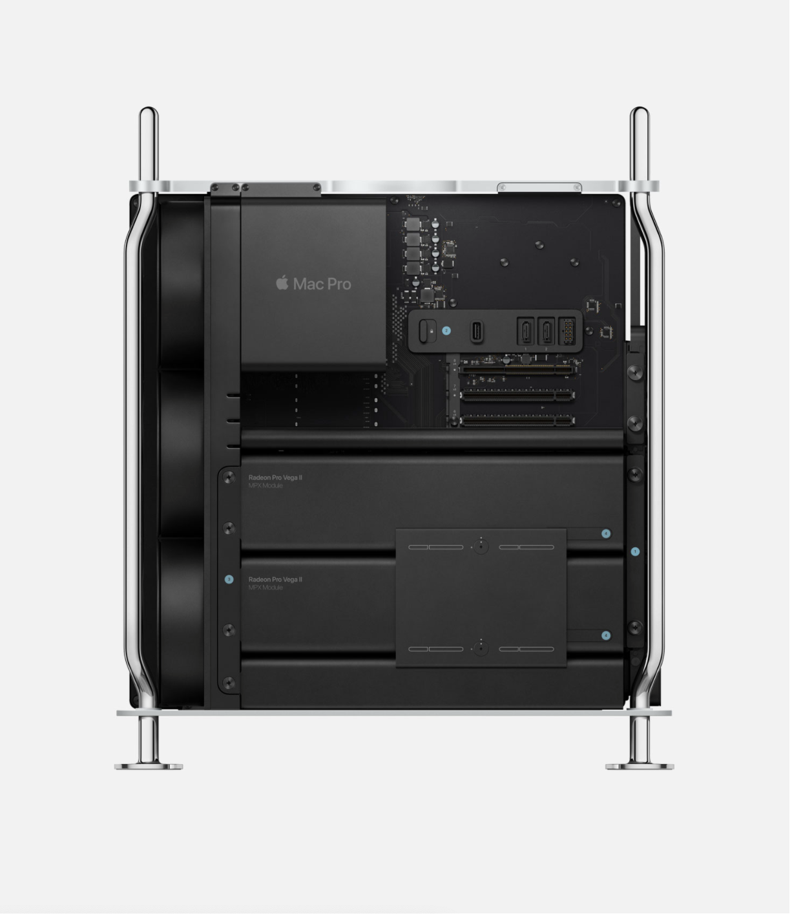

欢迎详细了解Mac Pro

以实力刷新一切
这，是一台方方面面均登峰造极的 Macbr
它拥有极致的性能、强大的扩展能力，以及卓越的配置潜力
让广大专业用户能突破极限，挑战不可能

冷、静、天赋异禀。
大部分图形处理器都独立于整体系统之外，因而需要单独进行冷却。
而 MPX 模块则被设计成 Mac Pro 不可分割的组成部分。
它的形状让它能装备更大的散热器，与机器的内部通风系统协同，安静地疏散热量。
这样就无需用到以螺丝连接，并会产生噪声的风扇，使得运行温度和音量都控制在相当低的水平。


让我们重新认识一下内存
多核心工作站处理器需要极大的内存支持
Mac Pro 配有
六通道的高速ECC内存和12个DIMM插槽
内存最高可扩充至
1.5TB
因此专业用户能迅速流畅地进行各种工作
一般的塔式主机将内存条塞在很难够到的位置
而 Mac Pro 采用了
双面主板
使得接触和操作变得非常容易
最高达
2933MHz
DDR4 ECC内存
最高达
140GB/s
内存带宽
六通道
内存系统
点击选购Mac Pro>>
点击了解其他Apple产品>>
返回首页